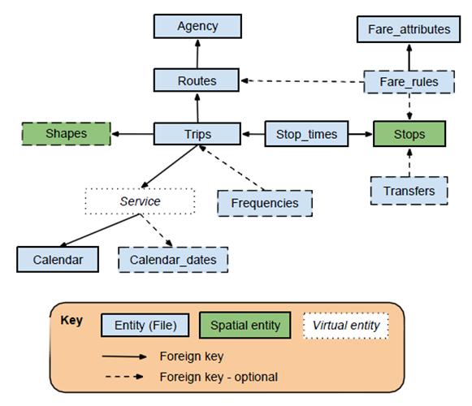
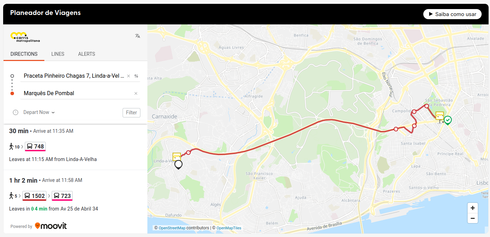
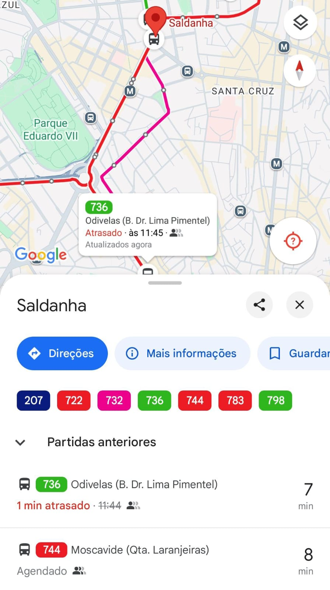

7 GTFS
Página em construção
O General Transit Feed Specification (GTFS) é um formato normalizado de dados abertos para documentar informações sobre transportes públicos, incluindo: itinerários, horários, localizações de paragens, padrões de calendário, viagens e possíveis transbordos. As operadoras de transporte público são responsáveis por manter os dados actualizados1.
Os dados GTFS são utilizados em várias aplicações, como o Google Maps, City Mapper, entre outros, para fornecer direcções de transportes públicos. Podem ser disponibilizadas para uma cidade, uma região ou mesmo um país inteiro, dependendo da operadora de TP.
Os dados encontram-se num ficheiro .zip que inclui vários ficheiros .txt (um para cada tipo de informação) com relações tabulares (campos comuns). Os mesmos podem ser facilmente editados em qualquer computador.

Os GTFS podem ser estáticos (ou agendados / schedule) - por exemplo para viagens tabeladas, ou em tempo real (real time) - inclui mais informação, tal como posicionamento em tempo real.
7.1 GTFS-Schedule
O GTFS Schedule é uma especificação que define um formato comum para informações estáticas sobre transportes públicos (agendadas, ou que não alteram dinamicamente).
Cada ficheiro descreve informação sobre transportes, como paragens, percursos, viagens, etc. Na sua forma mais simples, um conjunto de dados GTFS é composto por 7 ficheiros:
agency.txtroutes.txttrips.txtstops.txtstop_times.txtcalendar.txtcalendar_dates.txt
7.2 GTFS-Realtime
Os GTFS Realtime é uma norma que permite às operadoras de transportes públicos fornecer informações actualizadas sobre as horas de chegada e partida, alertas de serviço e posição dos veículos, permitindo aos utilizadores planear as suas viagens com maior detalhe, incluindo por exemplo os seguintes tipos de informação:
Actualizações de viagens - atrasos, cancelamentos, alteração de itinerários
Alertas de serviço - paragens deslocadas, acontecimentos imprevistos que afectem uma estação, um itinerário ou toda a rede
Posições dos veículos - informações sobre os veículos, incluindo a localização e o nível de ocupação do interior do veículo
Um exemplo de GTFS-Realtime são os dados da Carris Metropolitana.


7.3 Fontes online de dados GTFS
Os seguintes websites incluem vários GTFS de operadoras, a nível mundial. Uma vantagem destes agregadores de dados é que muitas vezes também disponibilizam versões por data - útil para análises do ano X.
Algumas operadoras de Transporte Público nacionais também disponibilizam os seus dados abertos nos websites. (Ver NAP Portugal)
7.4 Pacotes de R
Existem alguns bons pacotes R para ler e manipular dados GTFS, tais como:
Atenção que os pacotes podem partilhar os mesmos nomes de funções, pelo que é importante utilizar um delas de cada vez.
7.4.1 Exemplo
Dados de operadora de transportes que não estejam atualizados poderão levar a uma péssima experiência ao utilizador, uma vez que a realidade não corresponde às expetativas criadas pelos dados (desatualizados).↩︎